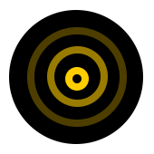

Intensity can be set at Options page
'>Intensity can be set at Options page
'>Intensity can be set at Options page
'>If you're a tad lost or needs to sign in, try the Options page
|
|
Sign Out | ||
| Options | |||
|
Test Beep
Intensity can be set at Options page '> |
Test Vibration
Intensity can be set at Options page '> |
Test Zap
Intensity can be set at Options page '> |
|
|
If you're a tad lost or needs to sign in, try the Options page |
|||
Welcome ! |
|||
, Pavlok will <span class=\"yellow\">Vibrate</span>.</li>
<li>If you get <b>to the limit</b>, it will <span class=\"yellow\">Beep</span>.</li>
<li>If you <b>cross that limit</b>, it will <span class=\"yellow\">shock you as long as you keep opening more tabs.</span></li>
</ul>")
Please choose your black sites, minus the "www." and separated by commas (facebook.com, reddit.com) and hit Enter key:
Please tell your exceptions for black sites, separated by commas.
| 1 Item Left | All | Today | Done | Clear Completed |
You can turbocharge your Hyper Focus time on Pomodoros. Here are a few options for you:
Instant Zap on blacklisted sites Blacklist will instantly Zap you out of the offending website and every 5 seconds after the initial zap. No excuses approach to better results!
'/>Binaural Soundtrack